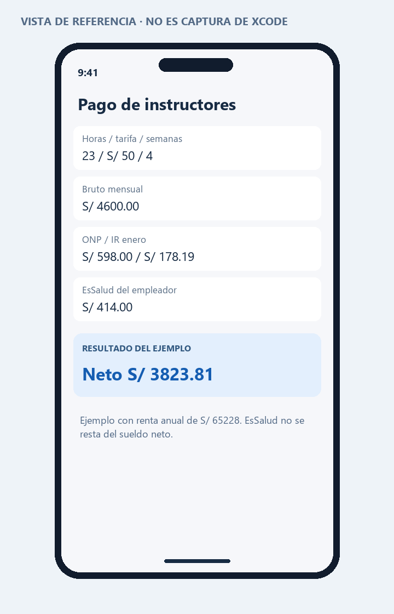

PROGRAMACIÓN EN MÓVILES AVANZADO · S08
07 · Pago de instructores
Actividad de las páginas 12–13. Se respeta el pago de S/ 50 por hora, máximo 23 horas semanales y cuatro semanas por mes que fija el ejercicio.
Bruto mensual = horas semanales × 50 × 4
ONP = bruto × 13%
AFP = bruto × 10% + comisión de flujo + prima sobre base limitada
Neto ordinario = bruto − pensión − retención de quinta
EsSalud del ejercicio = bruto × 9% (a cargo del empleador)
La página 12 menciona EsSalud entre descuentos, pero la 13 aclara que es del empleador. Se aplica esa aclaración: no se resta del neto. El factor de cuatro semanas es académico; no representa automáticamente cada mes de una planilla real.
Pensiones
ONP se calcula al 13%. AFP no equivale siempre a un descuento total del 10%: se distinguen aporte, prima y comisión. Las tasas son editables. La comisión sobre saldo no se vuelve a descontar como porcentaje del sueldo. La tabla SBS consultada para octubre muestra prima 1.37%, aporte 10% y tope asegurable S/ 12732.70. SBS: comisiones y prima por mes; ONP: aporte del 13%.
Impuesto a la renta
La UIT de 2026 es S/ 5500; siete UIT son S/ 38500. DS 301-2025-EF, informado por El Peruano.
Se proyectan ingresos gravados, se deducen 7 UIT y se aplican tramos acumulativos: primeras 5 UIT al 8%; siguientes 15 al 14%; siguientes 15 al 17%; siguientes 10 al 20%; exceso al 30%. AFP/ONP no reducen esta base. La deducción adicional de hasta 3 UIT no se descuenta en la retención del empleador. SUNAT: cálculo de quinta categoría.
| Mes | Retenciones anteriores a restar | Divisor |
|---|
| Enero–marzo | Ninguna | 12 |
| Abril | Enero–marzo | 9 |
| Mayo–julio | Enero–abril | 8 |
| Agosto | Enero–julio | 5 |
| Setiembre–noviembre | Enero–agosto | 4 |
| Diciembre | Enero–noviembre | 1 |
El ingreso extraordinario del mes permite estimar la retención adicional por diferencia de impuesto. No se suma dos veces a la proyección. El resultado se identifica como neto ordinario después del IR; la aplicación no liquida el pago extraordinario completo ni su afectación pensionaria. Fuente del procedimiento mensual: Instituto Aduanero y Tributario de SUNAT.
Ejemplo completo: 23 horas, ONP, enero
- Bruto: 23×50×4 = S/ 4600.
- ONP: 4600×13% = S/ 598.
- Supuesto: año completo de remuneración constante, dos gratificaciones de 4600 y bonificaciones extraordinarias de 9% por cada una: 828.
- Renta proyectada: 4600×12 + 9200 + 828 = S/ 65228.
- Exceso sobre 7 UIT: 65228−38500 = S/ 26728; cabe en las primeras 5 UIT.
- IR anual: 26728×8% = S/ 2138.24. Enero: 2138.24/12 = S/ 178.19 al céntimo.
- Neto: 4600−598−178.19 = S/ 3823.81.
- EsSalud académico del empleador: 4600×9% = S/ 414.
Casos adicionales
| Caso | Resultado |
|---|
| 20 horas, ONP, enero; grati 8000, bono 720 | Bruto 4000; ONP 520; anual 56720; IR 121.47; neto 3358.53. |
| 10 horas, ONP, enero; grati 4000, bono 360 | Bruto 2000; ONP 260; renta 28360; IR 0; neto 1740.00. |
| 23 horas, AFP saldo; prima 1.37%, flujo 0 | Pensión 523.02; mismo IR 178.19; neto 3898.79. |
| 23 horas, AFP flujo Prima 1.60%; seguro 1.37% | Pensión 596.62; neto 3825.19. |
| 24 horas o negativo | Entrada rechazada. |
| Mes 13 o UIT vacía | Entrada rechazada. |
Alcance y revisión
Se calcula un instructor dependiente domiciliado bajo los supuestos del ejercicio. La proyección requiere actualizar gratificaciones y otros ingresos al cambiar horas; esos montos se ingresan por separado porque pueden reflejar historial distinto. No es una planilla universal de cuarta categoría, no domiciliados, varios empleadores, subsidios o ceses. EsSalud real puede exigir base mínima u otras reglas: el importe mostrado se rotula expresamente como el 9% de la guía. EsSalud: el aporte es exclusivo del empleador.
Código y ejecución
Abre Proyecto/Instructores.xcodeproj en Xcode 15 o posterior, con un simulador iOS 17 o posterior. El código principal está en Proyecto/Instructores/InstructoresView.swift. Consulta las instrucciones de ejecución.
La estructura de proyecto está preparada. La compilación y las capturas reales quedan pendientes de ejecutar en una Mac; no se presentan como pruebas realizadas.
Vista de referencia
Representación de la interfaz y los datos de ejemplo. No es una captura del simulador. La vista ejecutable se encuentra en el archivo SwiftUI y en su #Preview.
